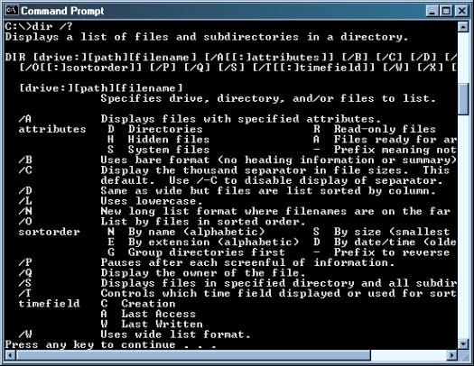
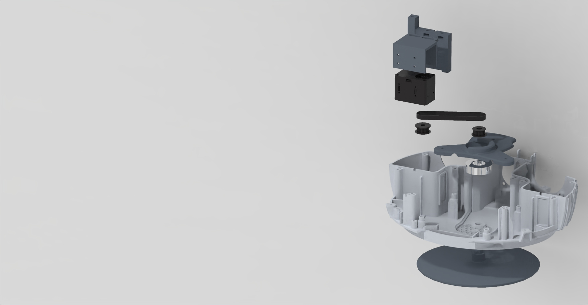
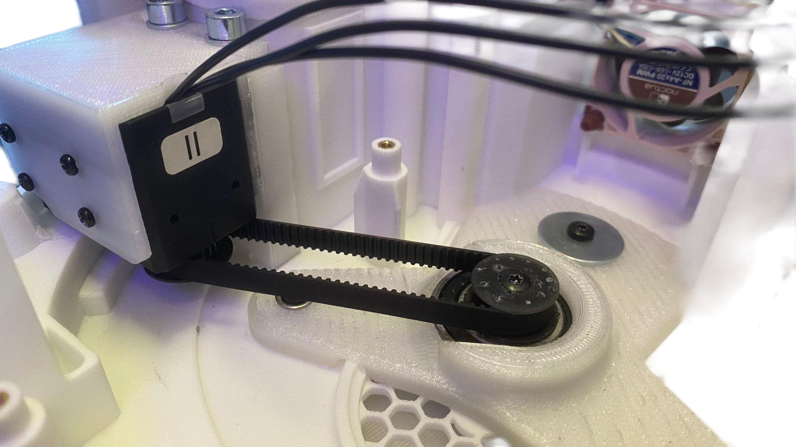
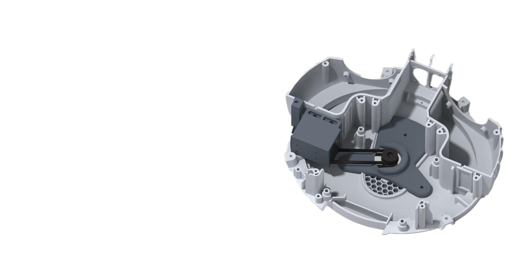

← Selected work
Mechanical prototyping / 2025
A wider world for Furhat
Concept development and mechanical prototypes for an additional degree of freedom.
- Context
- Furhat Robotics · Collaborative prototyping
- Period
- June – July 2025
- My work
- Concept exploration · Core mechanical design · Rapid prototyping
The idea
Furhat can move its eyes, head, and body, but its body originally had no rotational freedom. The team set out to add a full 360-degree axis and integrate it as closely as possible with Furhat’s existing system, enabling conversations in a complete 360-degree context.
From concepts to a working prototype
- Explored five initial mechanical concepts and built two early prototype approaches.
- Selected a belt-driven rotation mechanism on an axle after evaluating the concepts as a team.
- Designed components in Fusion 360 and produced parts with FDM and resin printing.
- Integrated a new rotation servo with the existing Furhat servo controller, NUC, PCB, and neck servos.
- Implemented tracking-based yaw control with a PID loop and a recentering state.
Making social interaction more spatial
The final prototype demonstrated a complete 360-degree rotation and coordinated the new axis with Furhat’s vision and movement system. The prototype also exposed practical next steps: managing cables and I/O, improving base stability, protecting the belt, maintaining airflow, and planning more human-like trajectories.



